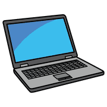
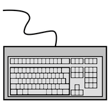
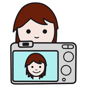
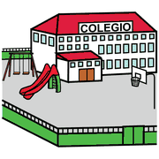
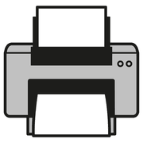
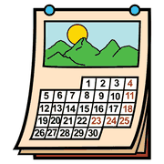
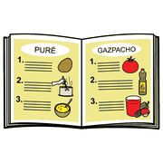
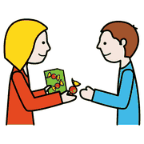

Guida operativa, laboratorio TIC per includere
AraWord passo passo
Una guida pratica per iniziare a scrivere con i simboli: installazione, primo testo, correzioni più comuni e idee da portare in classe.
gratuito,
per Windows,
Mac e Linux
A cosa serve
AraWord è un programma gratuito che mette un simbolo sopra ogni parola mentre scrivi. Serve per preparare testi in simboli per chi usa la Comunicazione Aumentativa e Alternativa, e per accompagnare chi sta imparando a leggere: il simbolo che compare conferma la parola.

così appare una frase: un simbolo per ogni parola o gruppo di parole
il terzo passo
è quello che
si dimentica
Installare
 computer
computer internet
internet
installare- Scarica AraSuiteDalla pagina del progetto su SourceForge. AraWord fa parte del pacchetto, insieme a TICO per le tabelle di comunicazione.
- InstallaApri il file scaricato e segui i passaggi. Alcune finestre sono in spagnolo: «Finalizar» chiude l'installazione.
- Aggiorna i simboliApri Strumenti, Gestione risorse, Controlla aggiornamenti. Senza questo passo i simboli non compaiono.
- Imposta la linguaIn Strumenti, Preferenze generali, scegli l'italiano per il programma e per i documenti.
Il primo testo
 scrivere
scrivere frase
frase- Cancella la parola di prova che compare all'apertura.
- Scrivi una frase breve, ad esempio «Io mangio la mela».
- Guarda i simboli: se uno non va bene, lo sistemi dopo.
- Salva con File, Salva: il file avrà estensione .awd e si riapre solo con AraWord.
in italiano
F5 si usa
sempre!
Sistemare i simboli

tastiera cambiare
cambiare ascoltare
ascoltare| Problema | Tasto | Soluzione |
|---|---|---|
| Il simbolo non è quello giusto | F3 | Mostra il simbolo successivo tra quelli disponibili per la stessa parola. |
| Una parola composta è divisa (o unita) male | F4 | Unisce in una sola cella più parole, come «spazzolino da denti», o le separa. |
| Il verbo è all'infinito | F5 | Rinomina la cella: scrivi «mangio» al posto di «mangiare» e il simbolo resta. |
| Voglio sentire il testo | F7 | Legge il testo con la sintesi vocale. |
Dal menu Testo scegli carattere, dimensione, colore e se la parola va sopra o sotto il simbolo. Dal menu Pittogramma cambi la grandezza dei simboli.
foto vere
funzionano
meglio
Aggiungere le tue immagini

foto aggiungere
aggiungere
scuolaLe foto della scuola, degli spazi, degli oggetti e delle persone di riferimento aiutano molto più dei simboli generici.
- Apri Strumenti, Gestione risorse, Aggiungi immagine
- Scegli la foto dal computer
- Premi + e scrivi la parola collegataPuoi aggiungere più parole e più lingue per la stessa immagine.
- Salva le modificheDa quel momento, quando scrivi la parola, compare la tua foto (con F3 la scegli).
Per le foto di persone serve il consenso, come per qualsiasi materiale didattico.
Esportare e stampare

stamparestampante foglio
foglioAraWord non ha il comando di stampa. Si usa File, Esporta come, scegliendo PDF o un'immagine. Il PDF si stampa; l'immagine si inserisce in un documento, in una presentazione o in un libro digitale.
da provare
in tirocinio
Idee per la classe
 storia
storia
calendario
ricettaSe qualcosa non va
 problema
problema aiutocomputer
aiutocomputer| Cosa succede | Cosa fare |
|---|---|
| Non compare nessun simbolo | Aggiorna i simboli da Gestione risorse (secondo passo dell'installazione). |
| Le parole sono in un'altra lingua | Cambia la lingua del documento dal menu Testo e in Preferenze generali. |
| Il file non si apre su un altro computer | Il formato .awd si apre solo con AraWord: per condividere, esporta in PDF. |
| La mia foto non compare | Controlla di aver salvato le modifiche in Gestione risorse e premi F3 sulla parola. |
da ricordare
nei materiali
Simboli e licenze
 pittogrammi
pittogrammi regole
regole
condividereI pittogrammi usati da AraWord sono quelli di ARASAAC, creati da Sergio Palao e di proprietà del Governo di Aragona, distribuiti con licenza Creative Commons BY-NC-SA. Si possono usare per scopi non commerciali, citando la fonte e condividendo i materiali con la stessa licenza.
Nei materiali basta una riga: «Pittogrammi: Sergio Palao, ARASAAC (arasaac.org), licenza CC BY-NC-SA, Governo di Aragona».